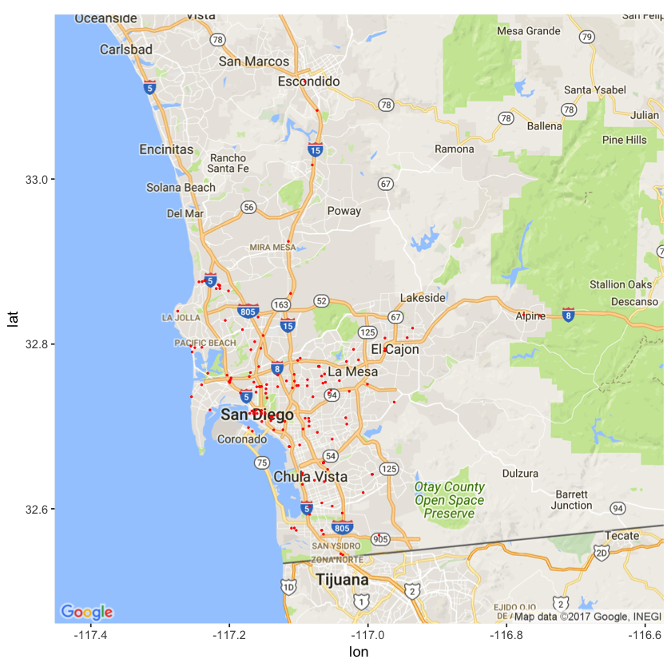

SDMTS Part 3 Real Time Data
This post will cover the process of scraping the data from SDMTS’s real time feed, as well as explore the data a bit.
Important Links
This part has a supplemental python notebook, as well a couple sample scripts that I used. They can all be found at the repo in the Part 3 folder.
Additionally, the data from the feed comes in the protocol buffer format that was created by google. I will talk a bit about protocol buffer in this post, but here is a link to the official documentation.
Introduction
SDMTS provides the end points to reach their data on their developer page. The feed we will be concerned with in this post and throughout the series will be the vehicle position feed. Before you can have access to the feed, you must request an api key, which can be sent via email submission from their website. Mine took roughly a week before they responded, so don’t get too worked up if you’re stuck waiting.
Protocol Buffer
The feed data is presented in the form of what is called a protocol buffer. It is a language-independent data format, similiar to json. You can follow the link above to google’s documentation to install the protobuf compiler, which will allow you to take a protobuf template, and generate source code in several supported languages, that will then allow you to read in pb files and generate the objects.
In the repo I already compiled the module for python in order to read in the pb files we want, in this case the protobuf template comes from the GTFS real time spec.
File Download and Parse
The note book covers most of the details of this process. If you are interested please take a look but nothing particularly interesting happens here.
The script I have included I have running on a raspberry pi 3. I have it scheduled to scrape from the feed once a minute throughout the day. Because the buses are not all updated consistently, this results in duplicate data, which I remove using the other script.
Visualization
Here is a snapshot of all of the buses picked up by the feed:

Conclusion
If you felt these first three parts were pretty dull please stick around! These steps were necessary in order to set up the context for the next few parts. In part 4, we will begin to get our hands dirty with a bit of feature engineering, and extract some interesting information out of our data.